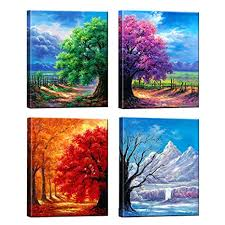

Welcome to my website! What's your favorite dish for the changing of the season? Different foods are better served at different times of the year. For example, nobody wants a cozy cup of soup in the hot summer months, but hey, if you do, we got you covered! Instead, try something like our Watermelon Sangria recipe!
Thanks for checking out my website, I have provided you with fun recipes for the changing weather. These different options will hopefully keep you coming back for more. Definitely look at our featured list for 2019!